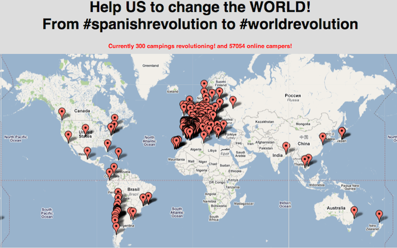

Del Copyleft al #Globalcamp
30 apara ver nacer el cerebro red social

| space, → | next slide |
| ← | previous slide |
| d | debug mode |
| ## <ret> | go to slide # |
| c | table of contents (vi) |
| f | toggle footer |
| r | reload slides |
| z | toggle help (this) |

2008-2011 Las redes sociales son ya un hervidero, decenas de miles usan esos canales para participar como enjambres. Wikileaks y Anonymous entran en escena planteando el conflicto a nivel global Copiar, descargar, redistribuir pasa a ser algo normal * Pese a presiones de SGAE, y la industria (Juicio Pablo Soto y mᳩ
